?
準備中
プロトタイプ
企画が定まった翌日くらいに作ったプロトタイプ
α～β
初期マップ配置
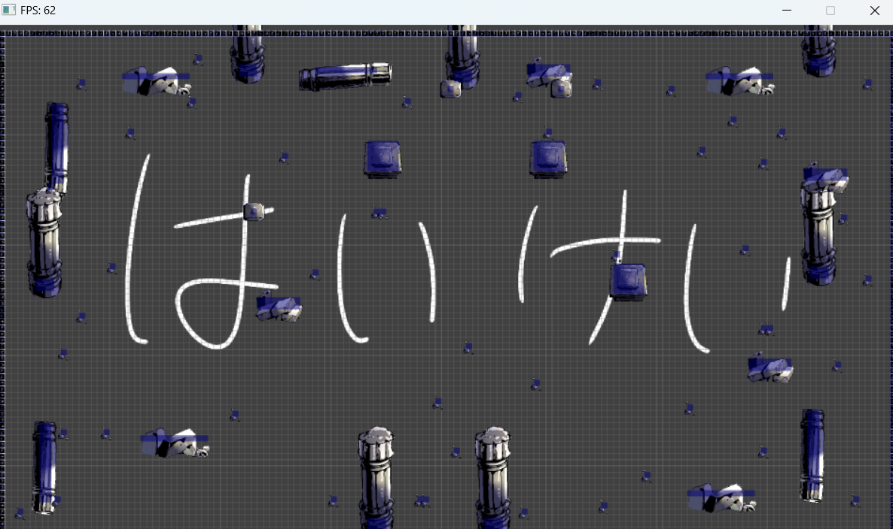
最初は完全2Dだった

3D空間になった ここからHD-2Dスタイルになる

円判定、攻撃力のデバッグ
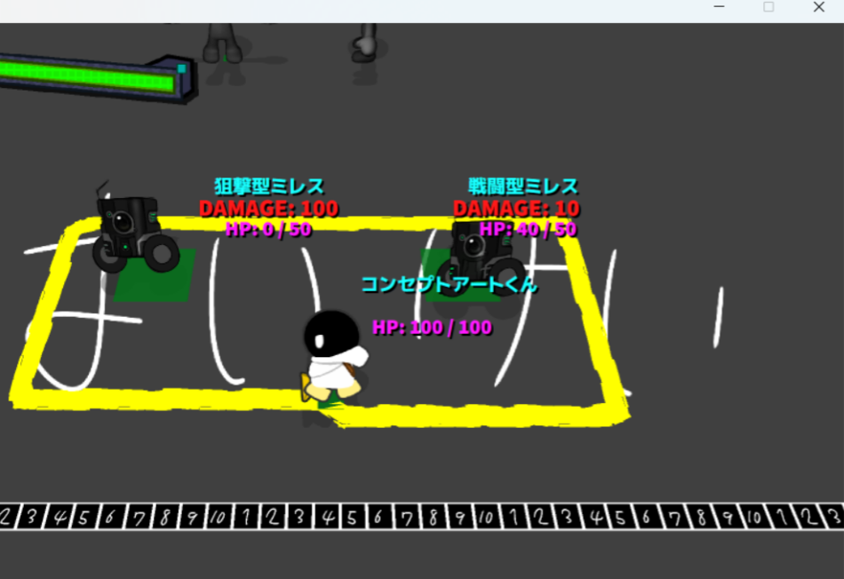
シェーディングテスト

ポリゴンのテスト
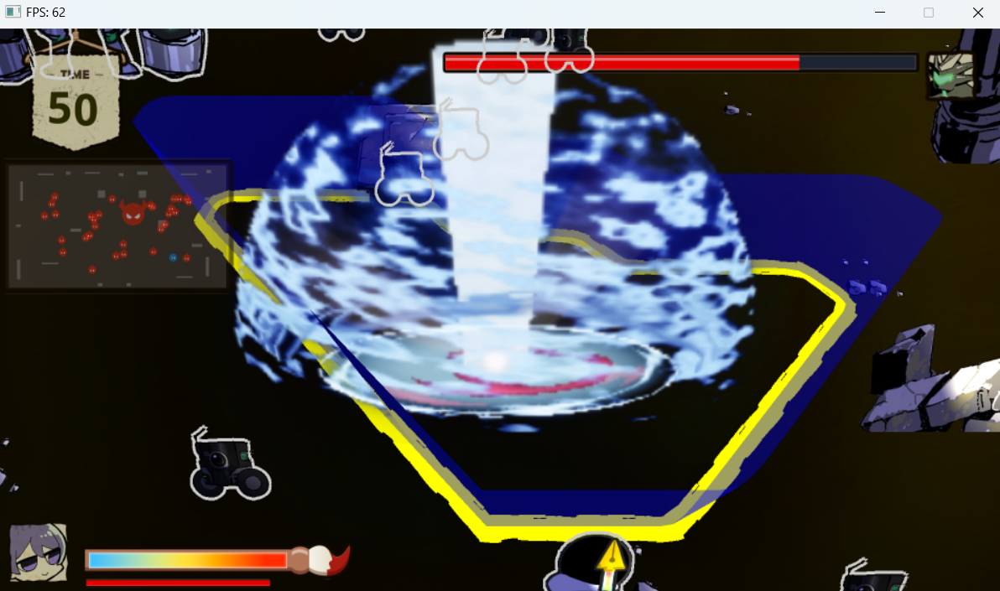
マスター
ボス(3Dモデル)のアニメーションテスト

エフェクト本格実装

初期案
最初期はかなりファンタジー寄りだった

ミレス、インペリウス、カイトとネオ
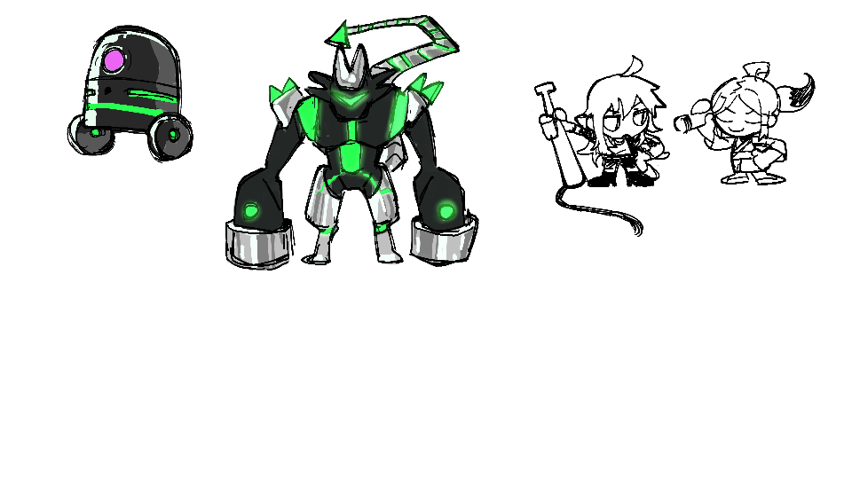
主人公 (白井 海斗)
初期は着物感が強め
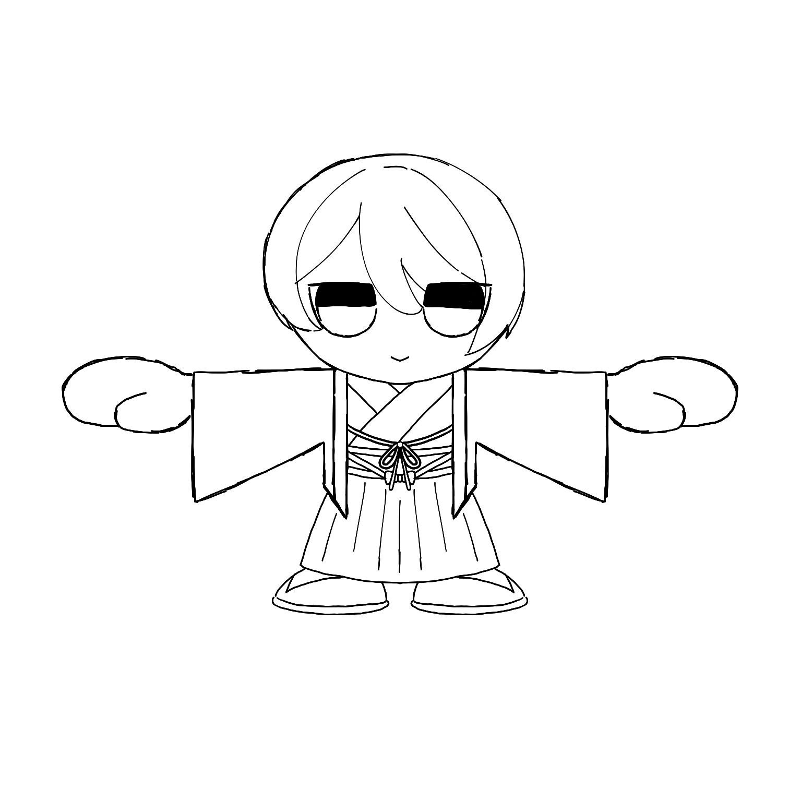


神崎 ネオ
初期は銀髪だった


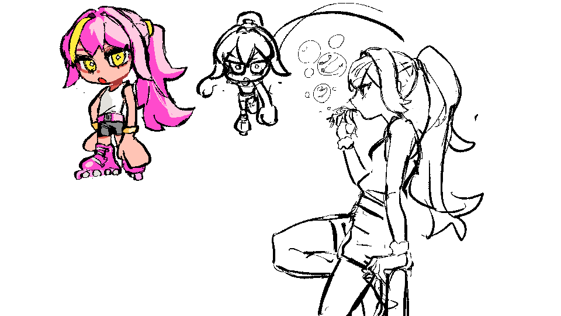
制服が導入される

破壊型コントリウス
インペリウスの没デザインを再利用
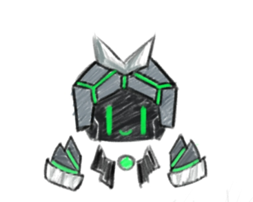

時限式殲滅爆弾（アニヒレイター）


元々実装する予定はなかったキャラクターですが、
一人のプランナーが自己満で出した設定上のみの存在を元に
メインプログラマーが半ば勝手に作り、
成り行きで本作にでることになりました。
?
納期の都合上お蔵入りに…
モーションが既に出来上がっていたコントリウスが代わりに参戦する形になりました。
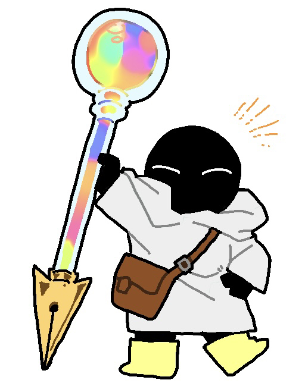

戦闘型/狙撃型ミレス


指令型レガトス

なぜかネタキャラになる


統制型インペリウス
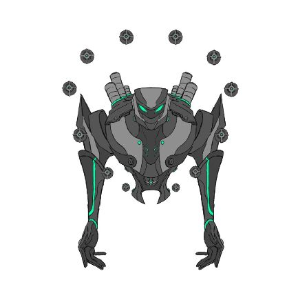


リアルすぎてゲームのテイストに合わなかったので没

 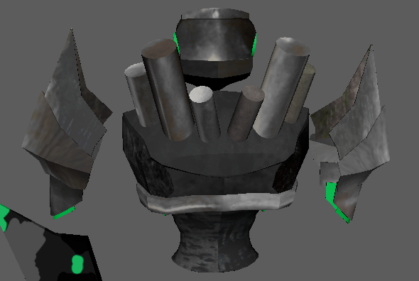
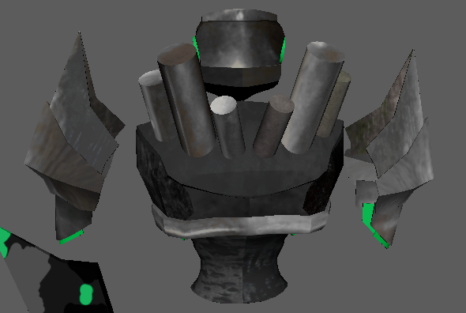
コンセプトアート


初期はステージギミックをもっと生かす予定だった
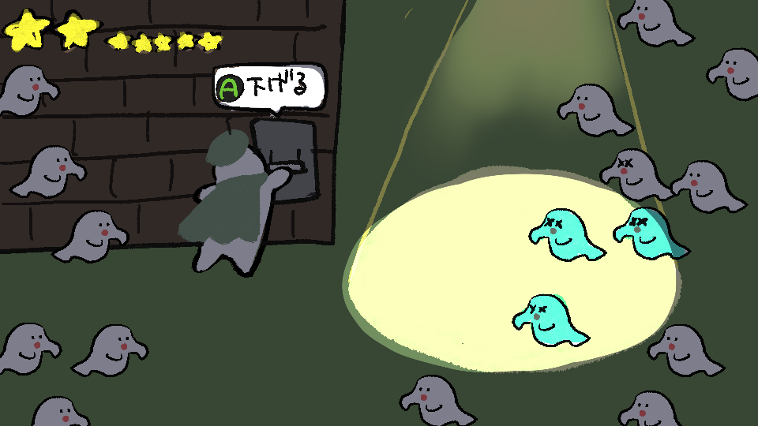
結局本実装されることはなかったお二人さん

ステージ

遺跡ステージ


ゲーム画面イメージ
インゲーム
 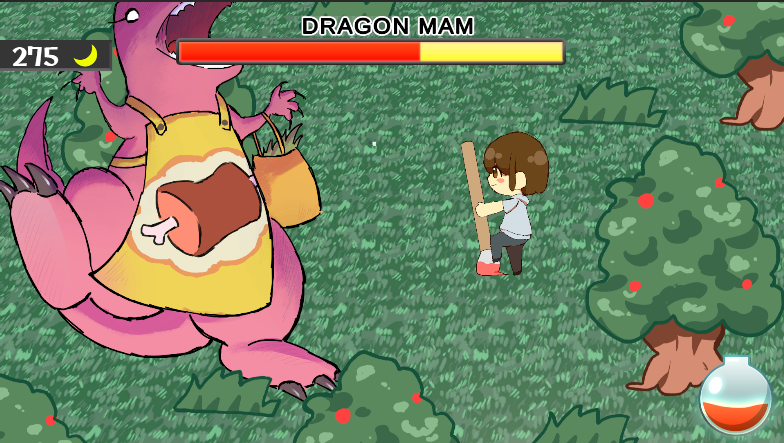
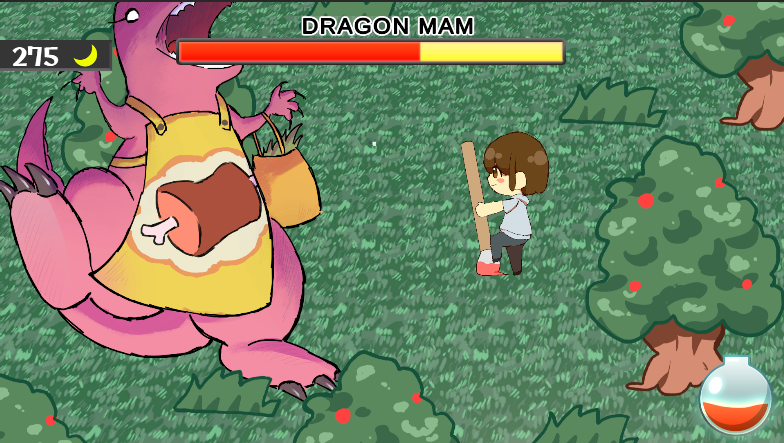
ステージ選択
 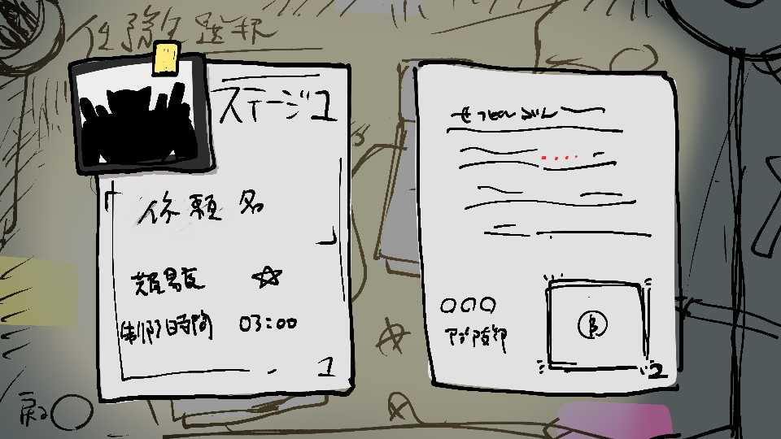
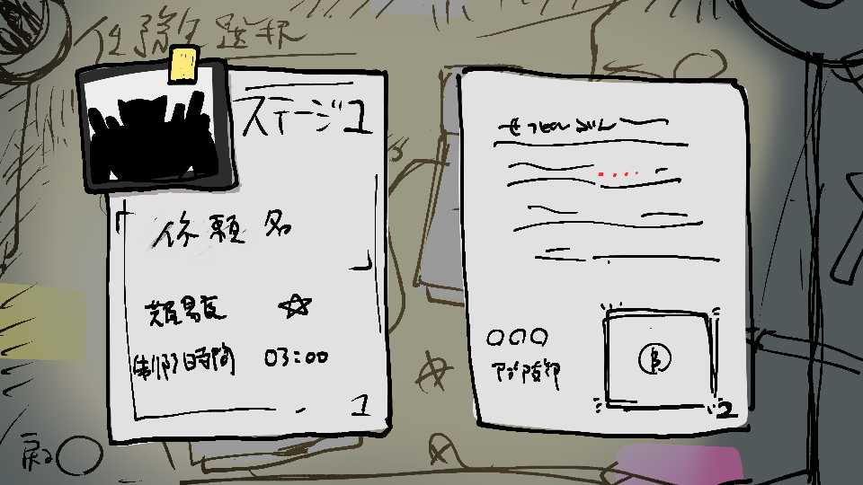
キャラクター選択


エフェクト

タイトル
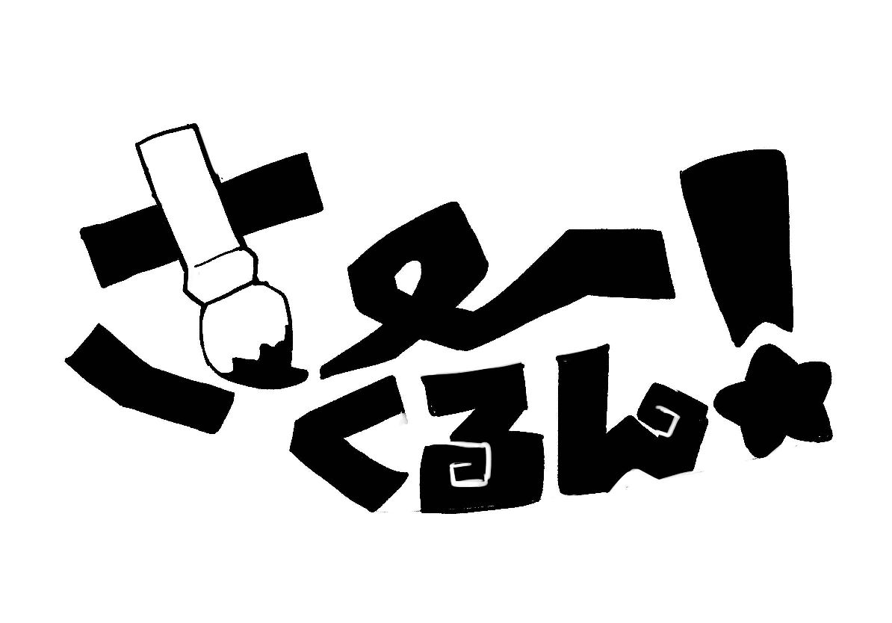


 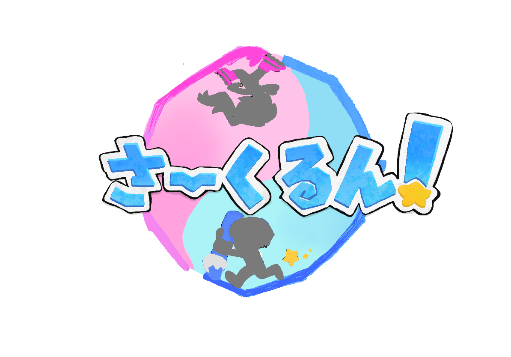
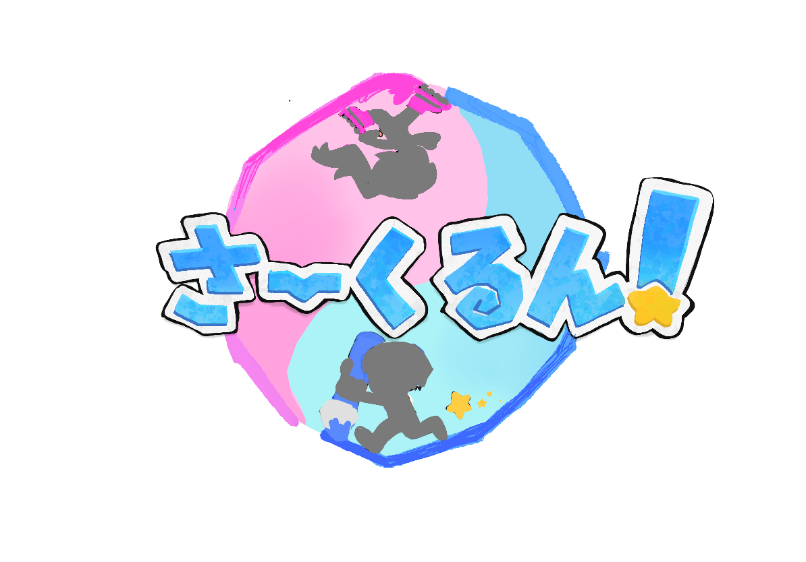